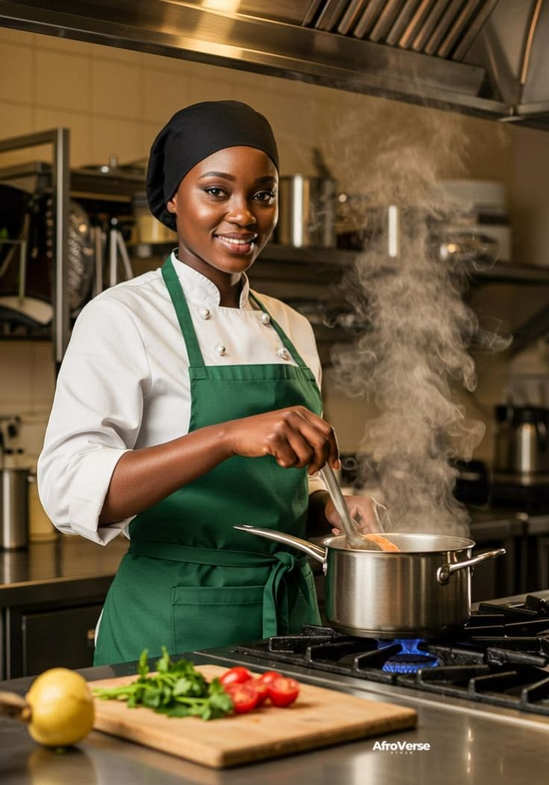

Notre mission
Faire découvrir les traditions culinaires ivoiriennes à travers des plats généreux et une expérience conviviale.
Notre histoire
Saveurs d’Ivoire est un restaurant fictif imaginé autour des recettes, des souvenirs et de l’hospitalité ivoirienne.
D’où vient l’idée ?
Dans l’histoire que nous avons imaginée, Saveurs d’Ivoire ouvre ses portes à Abidjan en 2018. Sa fondatrice, Aïssata, souhaite faire découvrir les plats qui rassemblaient sa famille : des recettes généreuses, préparées avec patience et servies dans la bonne humeur.
Au fil du temps, cette petite table fictive devient un lieu de rencontre où habitués et visiteurs se retrouvent pour partager les classiques ivoiriens et le plaisir d’être ensemble.

Ce qui nous guide
Une cuisine sincère, un accueil ouvert et le goût du partage.
Faire découvrir les traditions culinaires ivoiriennes à travers des plats généreux et une expérience conviviale.
Honorer les recettes et les gestes transmis, tout en accueillant chaque convive avec simplicité.
Prendre le temps de bien recevoir et créer une table où chacun trouve sa place.
Les visages de la maison
Dans ce projet fictif, chaque membre contribue à l’accueil et au plaisir de la table.
Fondatrice et cheffe
Elle imagine la carte et veille à l’esprit des recettes de famille.
Accueil et salle
Il reçoit les convives et fait de chaque visite un moment chaleureux.
Cuisine et traiteur
Elle prépare les commandes et aide à organiser les repas à partager.
Les personnes et l’histoire présentées sur cette page sont fictives.